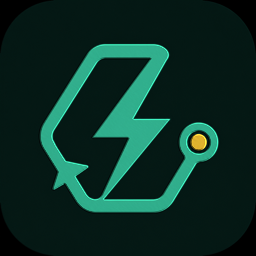

A BarnLabs open-source project
Speed gives review
room to think.
LightningLoop puts your chosen fast model inside a criteria-first loop: clarify, research, challenge, implement, challenge again—until deterministic evidence gates agree it is Gold.
Native macOS GUI · Pi terminal harness · Credentials stay in Keychain
The operating system
One runtime.
Three hard roles.
The harness—not the model—owns permission, evidence, and the final Gold decision.
- 01Clarify
Turn an open request into the few decisions that materially change success.
- 02Contract
Write falsifiable criteria, proof-bearing steps, risks, and an acceptance test.
- 03Challenge
A harsh reviewer rejects vague proof, missing states, and convenient assumptions.
- 04Implement
The implementer repairs every cited defect and returns an inspectable artifact.
- 05Prove Gold
Every criterion needs independent evidence. Exhaustion pauses; it never passes.

Evidence over theater
Generated.
Rendered.
Reopened.
This 4,096-vertex textured relief began as the app icon. LightningLoop generated both interchange and editable mesh formats, shaded the preview, then reopened the GLB to verify its mesh, embedded texture, and material.
- ✓ `.glb` and `.obj` artifacts
- ✓ 256 × 256 shaded preview
- ✓ Machine-readable validation report
- ✓ Honest 2.5D limitation disclosed
FAST INFERENCE / STRICT CRITERIA / INDEPENDENT REVIEW